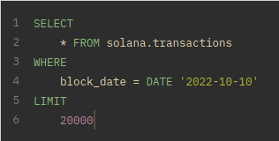
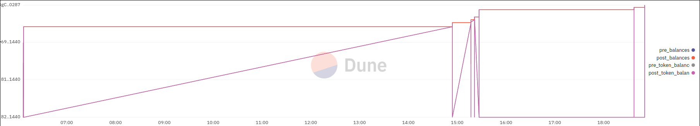
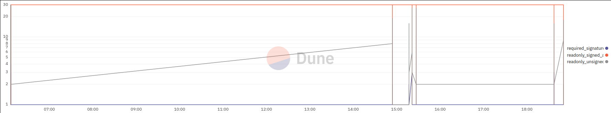

Risk Management for Investors
Contents
Risk Management for Investors#
Block Chain Forensics#
Block chain forensics entails combing through the blocks of transactions relevant to a given market, which can be read directly from the host chain. This goes a few steps beyond what we have shown above with the OHLC-V data. While the price data may be enough to alert users that an attack is goin on, these attacks happen with massive microtransactions. For now stopping these attacks in progress is not practical. We must examine the history so that we can prevent such events.
The goal with forensics is to pull more information about actual wallet addresses and direct calls, rather than aggregate data. In many cases, there are API endpoints available to simplify this process.
All of the endpoints for Mango Markets data are down. These return actual .csv files with correctly titled columns, however, there are no rows of data. The mango markets python library is also defunct.
import pandas as pd
asset = "MNGO-PERP"
funding = pd.read_csv("https://mangolorians.com/historical_data/funding_rates.csv?instrument=" + asset)
trades = pd.read_csv("https://mangolorians.com/historical_data/trades.csv?instrument=" + asset)
liquidations = pd.read_csv("https://mangolorians.com/historical_data/liquidations.csv?instrument=" + asset)
# examine data
print(funding, trades, liquidations)
Empty DataFrame
Columns: [market, avg_funding_rate_pct, avg_oracle_price, avg_open_interest, hour]
Index: [] Empty DataFrame
Columns: [market, price, quantity, maker, maker_order_id, maker_client_order_id, taker, taker_order_id, taker_client_order_id, maker_fee, taker_fee, taker_side, timestamp]
Index: [] Empty DataFrame
Columns: [market, price, quantity, liquidatee, liquidator, liquidation_fee, timestamp]
Index: []
A search through github reveals that the Blockworks Foundation (which made Mango Markets) put out an app to help liquidate old accounts, and there is no code available for our purpose apart from the mangolorians website repo.
Solscan has a link to only one “ad hoc report” under its analytics menu item. The title of the page is “Mango Markets Exploit”. This links to a broken page with 3 sections. The first is “Hacker’s Wallet” followed by “Exploitation Inflow Details” and “Exploitation Outflow Details”.
https://beta-analysis.solscan.io/public/dashboard/813a35cd-48b2-4e26-8ed9-6d67e2b6f029
Dune Analytics#
Dune is a service that offers a PostgreSQL-like or Spark-like interface for queries of block chain data. There is also the option to easily dashboard these views.
If we filter the Solana chain blocks for the day and we take a sample of just 2000 so as not to crash the browser, we can see something interesting:


Large balance shifts coincide with the attack.

The number of unsigned read-only addresses introduced into each blocks holds for a time period that coincides with the attack. There are two distrinct and opposite phases to the attack. An initial forced pushed on the price, pause, and then a massive short. Even if somebody knew this was happening, they wouldn’t have time to engineer the coordinated effort to beat him to the short. This was so heavy, that it is visible in the regular Solana block history.
By examining the blocks more carefully, we can learn about how these market manipulations take place. Or, it may be even simpler to train a Naive Bayes classifier on these statistics. Neural networks trained on this data may be able to tell you exactly who is in the early stages of an attack, and generic smart contracts can be written to drain large positions in accordance with these triggers.
The greatest challenge lies in determining what constitutes an illegal trading strategy. There are other large market activities in the earlier history which clearly resulted in great losses to the market capitalization. The current case against Eisenberg will determine what is considered a valid short and what is considered illegal. It appears the only observable difference is the time frame across which the losses of capital occur, and that the final vulture is the one who is culpable.